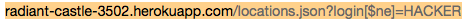

Prepared by Alex Kasemir • 12/5/2014
This assignment assesses the security of the Marauder's Map application from the client side and the server side. The Marauder's Map Application was created by Saurav Acharya. The Marauder's Map App posts your location to a database with a login and their location in latitude and longitude. I was hired to hack the web application and find as many vulnerabilities as I can
First, some attacks were done without looking at the source code first. This is called a "black-box" attack, and it is how most attacks would be done because hackers do not have access to the source code. Then, some attacks were done with access to the source code.
After doing the black box test, most of the security flaws have to do with user input and allowing dangerous things for the user to do. The User can write code to do dangerous things or other things to the input in order to mess up the data in some way. The user cannot be trusted and there should be security measures to prevent them from "hacking" your application.
Cross-Site Scripting
<script>alert('poop')</script>).
The code could be inserted into the application liek this:
curl --data "login=<iframe src='http://www.ecbmlegal.com/wp-content/uploads/2014/05/hacker.jpg'></iframe>&lat=1000000&lng=1" localhost:3000/sendLocation
Bad Input Data
isFloat() method. This would ensure that all the data passed in is
actually a number that could be a latitude or longitude. The other thing that is important
is that the location that is sent is one's actual location. That way they cannot fake
their location. This could be done by making it only possible to send in your location
through the navigator object or GPS.Revealing all of database
localhost:3000/locations.json?login[$ne]=poop and they would
reveal the contents of the database. Everyone else's data.
|  |
This can be fixed again by checking the user input for some
dangerous characters and not letting them be used. Also, they should just always
run the query the reveals one name in the database not let someone run an arbitrary
mongo command on the database like the [$ne] When making requests. That way
someone cannot reveal the entire database to themselves.
Overloading database
The fix for this would be to 1. limit the length of a username and 2. to limit the number of requests a single entity could send in a given time. That way they cannot just repeatedly be send to crash the server
A lot of these flaws can be fixed by not trusting the user. People are evil so you cannot expect them to do the right things. I am sure that there are more flaws the application that are not immediately seen, and they could be found with a tool like Burp Suite potentially, a more indepth look into the security of the app. This costs $300 dollars a year and the security assessor would have to be compensated as well. I would say that this would cost another $500 dollars. For a grand total of $800 to protect the site against any cyber attacks. That way Anonymous can't get 'em.